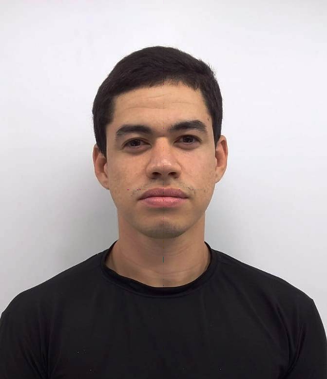

LUIZ FELIPE SANTOS E SILVA

CONTATO:(87) 9.9100-4838
E-MAIL: luiz.felipe7@aluno.ifsertao-pe.edu.br
CIDADE: Salgueiro - PE, CEP: 56.000-000
EDUCAÇÃO:
-
projeto pessoal para fins de educativo utilizando a linguagem de programação python
Jogo Dinâmico do Mario
Tempo de Projeto: 10 dias
github
-
IFSertão - PE Campus Salgueiro
3º Período Tecnólogo em Sistemas para Internet
2023 - Previa: 2025
-
HUMANO EDUCACÃO - CURSO FAST READ EM LEITURA DINAMICA
Certificado em Leitura Dinâmica
Carga Horaria: 20:00
2020 - 2022
-
PUCRS - pontifícia universidade católica do rio grande do sul
Certificando em Liderança, Capacidade de Aprender e Resiliência
Carga Horaria: 04:00
2021 - 2021
-
EREM Gumercindo Cabral
Médio Completo
2011 - 2014
SOBRE MIM:
Tenho experencia em atendimento ao cliente,
ao longo dos meus 3 anos, venho buscando sempre melhorar mais,
estou atualmente no Instituto Federal de Salgueiro,
tenho experencia com tecnologia,
principalmente na área da informática,
tento aprender ao máximo,
com o projeto de extensão vi melhores maneira de progredir em minha carreira profissional,
atualmente sou solteiro, tenho 26 anos,
tenho disponibilidade de horário comercial.
EXPERIENCIAS:
-
Ago 2020 - Ate o Presente Momento
Lan House de Vandu
Prestador de Serviços Digitais
Venho Trabalhando de maneira Avulsa sem nenhum vinculo empregatício,
nessa micro empresa como o prestador de Serviços Digitais,
ao longo desses anos, venho melhorando a capacidade de recepcionar clientes,
trazendo benefícios e prosperando juntamente com ela.